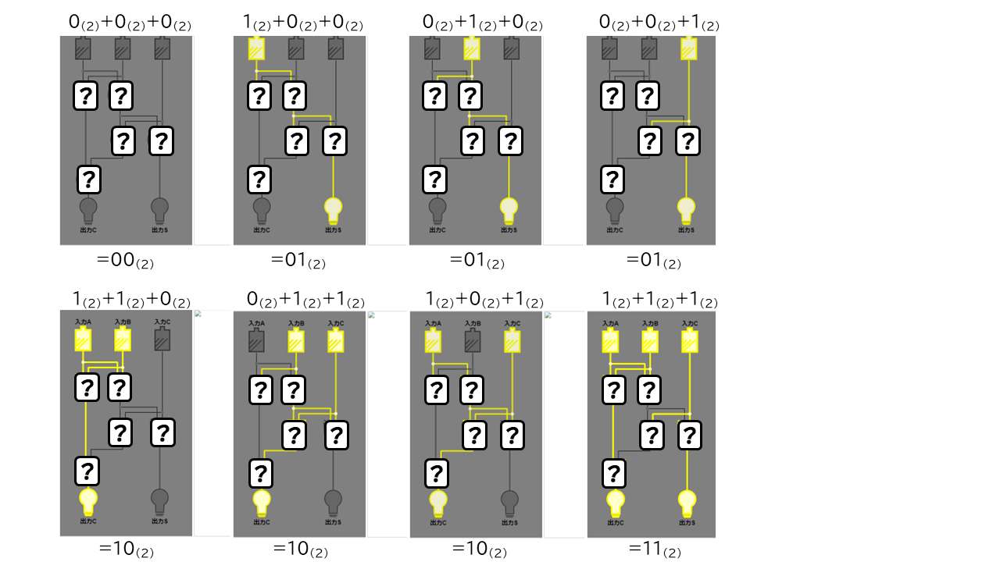

【Lv.2】
３つの２進数の足し算を行う回路を作ってみよう。
・右側のように、入力に応じて２進数の足し算の結果が出力されるように論理ゲートの組み合わせを切り替えてみよう。
・すべての入力パターンで、意図した出力が出るようにできたら成功！次のレベルに進もう！

ヒント
①【入力Ａ】＋【入力Ｂ】の"足し算"をする。
②その【結果の１桁目のビット】と【入力Ｃ】を"足し算"をする。
※"足し算"はLv1で組んだように、ANDとXORで作れる。
③桁上がりとなる【出力Ｃ】は"どちらか"の足し算で発生していれば１になる。
まえへ つぎへ